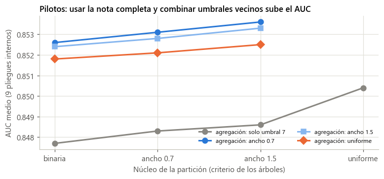
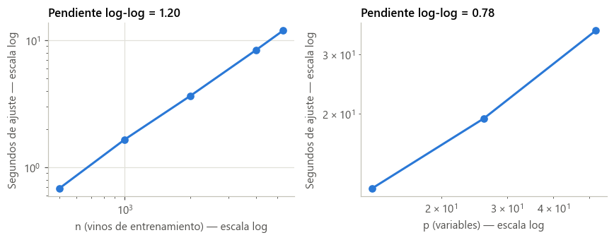

El modelo original: Bosque Ordinal Focalizado#
Motivación: la limitación de binarizar la nota#
Todos los modelos del Entregable 2 aprenden con la etiqueta \(Y = \mathbb{1}\{\text{nota} \ge 7\}\). Esa etiqueta trata igual a un vino de 6, que estuvo a un punto de ser bueno, y a uno de 3. Binarizar una respuesta ordinal o continua desperdicia información y reduce la potencia estadística [Altman and Royston, 2006, Harrell, 2018]. En el problema del vino la pérdida es concreta: 4 de cada 5 vinos son «no buenos» y casi la mitad de ellos tiene nota 6.
La evidencia de que esto limita a los modelos existentes viene de los experimentos piloto (Figura 14), hechos solo con validación interna dentro del entrenamiento del pliegue externo 1: un Extra-Trees que aprende la nota completa supera al mismo método entrenado con la etiqueta binaria, y combinar las probabilidades acumuladas de los umbrales vecinos al 7 supera tanto a usar solo el umbral 7 como a darles a todos el mismo peso.

Figura 14 AUC de Extra-Trees de salida múltiple con raíz de p atributos candidatos en la ronda 2 de diseño. La referencia binaria (partición y agregación binarias) da 0.848; la mejor combinación, 0.854. Los datos completos de las 80 configuraciones de diseño están en experiments/bitacora_diseno.csv.#
Formulación#
Sea \(\{(\mathbf{x}_i, y_i)\}_{i=1}^n\) con \(y_i\) en niveles ordenados \(\ell_1 < \dots < \ell_L\), y sea \(\tau\) el umbral del evento (\(\tau = 7\) en el vino), de modo que \(Y_i = \mathbb{1}\{y_i \ge \tau\}\). Los umbrales \(t_1 < \dots < t_K\) son los niveles salvo el menor (más \(\tau\) si no estuviera), y cada vino se describe por sus indicadores acumulados \(Z_{ik} = \mathbb{1}\{y_i \ge t_k\}\), que son no crecientes en \(k\).
Núcleos. Con \(s\) la desviación estándar de \(y\) y el centro \(c = \tau + \delta s\), los pesos de un núcleo de ancho relativo \(h\) son
con los límites \(h \to 0\) (todo el peso en el umbral más cercano a \(c\)) y \(h \to \infty\) (pesos iguales). El modelo usa dos núcleos: \(w = \omega(h_p)\) para partir y \(\omega = \omega(h_a)\) para puntuar.
Impureza y ganancia. En un nodo \(S\) con pesos bootstrap \(v_i\), \(n_S = \sum_{i \in S} v_i\) y \(F_k(S) = n_S^{-1} \sum_{i \in S} v_i Z_{ik}\), la impureza acumulada ponderada es
y la ganancia de dividir \(S\) en \(S_L\) y \(S_R\) es
donde \(A_k = \sum_{i \in S} v_i Z_{ik}\). La segunda forma es la que se programa: solo necesita sumas por nodo y por candidato.
Puntaje y calibración. Con \(\hat F_k(\mathbf{x}) = T^{-1} \sum_{b=1}^{T} F_k(\text{hoja}_b(\mathbf{x}))\), el puntaje y la probabilidad son
con \((a, b)\) ajustados por máxima verosimilitud sobre los puntajes fuera de bolsa \(s_{\text{oob}}(\mathbf{x}_i)\) y las etiquetas \(Y_i\):
Supuestos. (S1) Los vinos son intercambiables (no hay estructura temporal); (S2) la nota resulta de cortar una calidad latente con umbrales fijos, de modo que las probabilidades acumuladas vecinas comparten información sobre el mismo vino; (S3) la relación entre química y calidad es suave a trozos, lo que los árboles capturan. S2 es el supuesto clásico de los modelos ordinales [McCullagh, 1980] y es plausible para una nota que es la mediana de catadores en una escala de 0 a 10.
Pseudocódigo#
hoja mínima ℓ; anchos h_p (partición) y h_a (agregación); desplazamiento δ.
Salida: probabilidad calibrada p(x) = P(y >= τ | x).
1. Umbrales t_1 < ... < t_K (niveles de y salvo el menor). Indicadores Z_ik = 1{y_i >= t_k}.
2. Escala s = desviación estándar de y; centro c = τ + δ·s.
Pesos de partición w_k ∝ exp(-(t_k - c)² / (2 h_p² s²)); pesos de agregación ω_k ∝ exp(-(t_k - c)² / (2 h_a² s²)).
3. Para cada árbol b = 1..T:
a. Muestra bootstrap de tamaño n.
b. Crecer por niveles. En cada nodo S con al menos 2ℓ casos y G(S) > 0:
G(S) = Σ_k w_k F_k(S) (1 - F_k(S)), F_k(S) = proporción ponderada de casos con y >= t_k.
Elegir m atributos al azar y un corte uniforme en [mín, máx] de cada uno.
Ganancia Δ = n_S G(S) - n_L G(L) - n_R G(R); dividir por el candidato de mayor Δ.
Cada hoja guarda la distribución acumulada F(hoja).
4. Puntaje: s(x) = (1/T) Σ_b Σ_k ω_k F_k(hoja_b(x)).
5. Calibración: con los puntajes fuera de bolsa, ajustar (a, b) por Newton (Platt).
Sustento teórico#
Proposition 1
La impureza (2) es el mínimo del puntaje de Brier ponderado de las probabilidades acumuladas del nodo: \(G_w(S) = \min_{\mathbf{u} \in [0,1]^K} n_S^{-1} \sum_{i \in S} v_i \sum_k w_k (u_k - Z_{ik})^2\), y el mínimo se alcanza en \(\mathbf{u} = \mathbf{F}(S)\).
Demostración. La función es separable en \(k\). Para cada \(k\), \(\phi_k(u) = n_S^{-1} \sum_i v_i (u - Z_{ik})^2\) es una cuadrática convexa con derivada \(2(u - F_k)\), que se anula en \(u = F_k\). Como \(Z_{ik}^2 = Z_{ik}\), su valor mínimo es \(n_S^{-1} \sum_i v_i Z_{ik} - F_k^2 = F_k(1 - F_k)\). Al sumar con los pesos \(w_k \ge 0\) se obtiene \(G_w(S)\). \(\square\)
El puntaje minimizado es, para respuestas ordinales, la versión ponderada del puntaje de probabilidad por rangos [Epstein, 1969] y la versión discreta del CRPS ponderado por umbral [Gneiting and Ranjan, 2011]. Es una regla de puntuación propia (estrictamente propia si todos los \(w_k > 0\)) por ser una suma ponderada de puntajes de Brier de eventos [BRIER, 1950, Gneiting and Raftery, 2007]. Cada árbol, por lo tanto, minimiza de forma voraz una regla propia centrada en el umbral que importa.
Corollary 1
Para cualquier partición, \(\Delta \ge 0\), con igualdad si y solo si \(F_k(S_L) = F_k(S_R)\) para todo \(k\) con \(w_k > 0\). En consecuencia, la impureza total de entrenamiento \(\sum_{\text{hojas}} n_h G_w(h)\) no aumenta en ninguna división, y el crecimiento de cada árbol termina tras a lo sumo \(n_b - 1\) divisiones, donde \(n_b\) es el número de vinos distintos de su muestra bootstrap.
Demostración. Por la proposición, \(n_S G_w(S) = \min_{\mathbf u} \sum_{i \in S} v_i \ell(\mathbf u, Z_i) \ge \min_{\mathbf u} \sum_{S_L} + \min_{\mathbf u} \sum_{S_R} = n_L G_w(S_L) + n_R G_w(S_R)\), porque usar el mismo \(\mathbf u\) en ambos hijos es una opción factible. La igualdad exige que \(\mathbf F(S)\) minimice en ambos hijos, y por convexidad estricta de cada coordenada con \(w_k > 0\) eso ocurre si y solo si \(\mathbf F(S_L) = \mathbf F(S_R)\). Cada división crea dos nodos con al menos \(\ell \ge 1\) vinos distintos; las hojas forman una partición de los \(n_b\) vinos, así que hay a lo sumo \(n_b\) hojas y \(n_b - 1\) nodos internos. \(\square\)
Proposition 2
Si \(P(y \ge t_k \mid \mathbf x) = \Psi(\eta(\mathbf x) - \theta_k)\) para una distribución continua estrictamente creciente \(\Psi\) y umbrales \(\theta_1 < \dots < \theta_K\) (modelo latente ordinal), entonces para cualquier vector de pesos \(\omega \ge 0\) con \(\sum_k \omega_k = 1\) el puntaje poblacional \(s^\ast(\mathbf x) = \sum_k \omega_k \Psi(\eta(\mathbf x) - \theta_k)\) es una función estrictamente creciente de \(P(Y = 1 \mid \mathbf x)\). Por lo tanto ordena los vinos igual que la probabilidad del evento y su AUC es el máximo posible.
Demostración. Cada término \(\Psi(\eta - \theta_k)\) es estrictamente creciente en \(\eta\) y al menos un \(\omega_k\) es positivo, así que \(s^\ast\) es estrictamente creciente en \(\eta\). También lo es \(P(Y=1 \mid \mathbf x) = \Psi(\eta - \theta_{k_\tau})\). Componer una función estrictamente creciente con la inversa de otra da una función estrictamente creciente, de modo que \(s^\ast = g(P(Y = 1 \mid \mathbf x))\) con \(g\) creciente. El AUC es invariante ante transformaciones estrictamente crecientes del puntaje y se maximiza con cualquier transformación creciente de la probabilidad a posteriori [Clémençon et al., 2008]. \(\square\)
La proposición dice que combinar umbrales no cambia el blanco: en la población, el puntaje combinado y la probabilidad del evento ordenan igual. La ventaja aparece en muestras finitas, porque los umbrales vecinos aportan información sobre el mismo \(\eta(\mathbf x)\):
Proposition 3
Sea \(\hat{\mathbf F}\) un estimador de las probabilidades acumuladas con covarianza local \(C/m\) y sensibilidad \(\mathbf g = \partial \mathbf F / \partial \eta\). Entre los puntajes lineales \(s = \omega^\top \hat{\mathbf F}\), la razón señal-ruido local \(\rho(\omega) = (\omega^\top \mathbf g)^2 / (\omega^\top C \omega)\) se maximiza con \(\omega^\ast \propto C^{-1} \mathbf g\), y \(\rho(\omega^\ast) \ge \rho(\mathbf e_\tau)\), donde \(\mathbf e_\tau\) usa solo el umbral del evento.
Demostración. Por Cauchy–Schwarz con el producto interno \(\langle \mathbf a, \mathbf b \rangle_C = \mathbf a^\top C \mathbf b\): \((\omega^\top \mathbf g)^2 = \langle \omega, C^{-1}\mathbf g \rangle_C^2 \le (\omega^\top C \omega)(\mathbf g^\top C^{-1} \mathbf g)\), con igualdad en \(\omega \propto C^{-1} \mathbf g\). El valor máximo \(\mathbf g^\top C^{-1} \mathbf g\) es mayor o igual que el de cualquier otro \(\omega\), en particular \(\mathbf e_\tau\). \(\square\)
El núcleo gaussiano es una familia de dos parámetros que contiene a \(\mathbf e_\tau\) (\(h_a = 0\)) y a los pesos uniformes (\(h_a = \infty\)); la búsqueda bayesiana elige el ancho dentro de la validación interna, así que la mejor configuración de la familia es al menos tan buena como la binaria en el criterio de búsqueda.
Proposition 4
El problema (5) es convexo; el método de Newton con búsqueda lineal de Armijo produce una log-pérdida no creciente que converge al mínimo global. Si \(b > 0\), la calibración es estrictamente creciente en \(s\) y no cambia el AUC.
Demostración. La hessiana es \(\sum_i \pi_i(1-\pi_i)(1, z_i)^\top(1, z_i) \succeq 0\), así que el problema es convexo; la condición de Armijo garantiza descenso en cada paso y el método converge al mínimo de una función convexa diferenciable [Boyd and Vandenberghe, 2004]. La composición \(\sigma(a + b\,\operatorname{logit}(s))\) es creciente si \(b > 0\), y el AUC solo depende del orden. \(\square\)
Las pruebas unitarias verifican numéricamente cada propiedad: la ganancia no negativa en todos los nodos de un bosque ajustado, la igualdad entre la impureza y el mínimo del Brier ponderado (contra un optimizador numérico), la reducción exacta al bosque binario con anchos cero, la monotonía de la distribución acumulada, el descenso de la log-pérdida de la calibración y la conservación del orden bajo el modelo latente.
Complejidad#
En cada nivel del árbol, con \(R_d \le n_b\) filas en nodos que todavía se dividen, \(m\) atributos candidatos, \(r\) cortes por atributo y \(K\) umbrales, el algoritmo hace: ordenar las filas por nodo y calcular mínimos y máximos por atributo, \(O(R_d \log R_d + R_d\, p)\); acumular las sumas de los candidatos con un producto disperso, \(O(R_d\, m\, r\, K)\); y elegir el mejor candidato, \(O(J_d\, m\, r\, K)\) con \(J_d \le R_d\) nodos. Con profundidad \(D\) y \(T\) árboles, el entrenamiento cuesta
que para árboles balanceados (\(D = O(\log n)\)) es \(O(T\, n \log n\,(p + m r K))\). La memoria es \(O(T\, n\, K)\) (a lo sumo \(2 n_b - 1\) nodos por árbol, cada uno con su vector acumulado), y predecir un vino cuesta \(O(T\, D)\), porque el puntaje combinado de cada hoja se precalcula. La calibración fuera de bolsa agrega \(O(T\, n\, D)\).

Figura 15 Tiempo de ajuste del Bosque Ordinal Focalizado con sus hiperparámetros finales, en un solo proceso, al variar el número de vinos y el número de variables (se agregan variables de ruido). Cada punto es la mediana de 3 repeticiones, o una sola medición cuando el ajuste con todos los datos tarda más de 30 s.#
La pendiente empírica en \(n\) es 1.20 y en \(p\) es 0.78. Ambas son coherentes con (6): el costo crece algo más que linealmente con \(n\) (por el factor \(D\), que aumenta con la muestra en árboles completos) y menos que linealmente con \(p\), porque solo los \(m\) atributos candidatos pagan el costo de los cortes y \(m\) crece como \(\sqrt p\).
Implementación#
El modelo está en src/original_model.py (unas 450 líneas). Solo usa numpy y scipy para el cálculo; de scikit-learn hereda BaseEstimator y ClassifierMixin, y usa sus funciones de validación de entradas, como sugiere el esqueleto del curso. La función central construye un lote de árboles nivel por nivel:
def _crecer_lote(self, X, Z, conteos, rng, importancias):
n, p = X.shape
K = Z.shape[1]
m, r = self._m, self.n_cortes
C = m * r
w_s = self.pesos_particion_
hoja_min = self.min_samples_leaf
arbol_fila, fila = np.nonzero(conteos)
peso = conteos[arbol_fila, fila].astype(float)
j = arbol_fila.astype(np.int64)
J = conteos.shape[0]
niveles = []
profundidad = 0
while J > 0:
filas_nodo = np.bincount(j, minlength=J).astype(float)
w_nodo = np.bincount(j, weights=peso, minlength=J)
A = sparse.csr_matrix((np.ones(j.size), (j, np.arange(j.size))), shape=(J, j.size))
S = A @ (peso[:, None] * Z[fila])
F = S / w_nodo[:, None]
G = (F * (1.0 - F)) @ w_s
divisible = (filas_nodo >= 2 * hoja_min) & (G > 1e-12)
if self.max_depth is not None and profundidad >= self.max_depth:
divisible[:] = False
atributo = np.full(J, -1, dtype=np.int64)
corte = np.full(J, np.nan)
rango = np.full(J, -1, dtype=np.int64)
nodos_d = np.flatnonzero(divisible)
if nodos_d.size:
Jd = nodos_d.size
pos = np.full(J, -1, dtype=np.int64)
pos[nodos_d] = np.arange(Jd)
sel = pos[j] >= 0
jr, fr, pr = pos[j[sel]], fila[sel], peso[sel]
orden = np.argsort(jr, kind="stable")
inicio = np.searchsorted(jr[orden], np.arange(Jd))
Xo = X[fr[orden]]
mins = np.minimum.reduceat(Xo, inicio, axis=0)
maxs = np.maximum.reduceat(Xo, inicio, axis=0)
varia = maxs > mins
clave = rng.random((Jd, p)) + 2.0 * (~varia)
cand = np.argsort(clave, axis=1)[:, :m]
filas_d = np.arange(Jd)[:, None]
lo, hi = mins[filas_d, cand], maxs[filas_d, cand]
cortes = lo[:, :, None] + rng.random((Jd, m, r)) * (hi - lo)[:, :, None]
V = X[fr[:, None], cand[jr]]
izq = (V[:, :, None] < cortes[jr]).reshape(jr.size, C)
fi, ci = np.nonzero(izq)
Q = sparse.csr_matrix((np.ones(fi.size), (jr[fi] * C + ci, fi)), shape=(Jd * C, jr.size))
E = Q @ np.column_stack([np.ones(jr.size), pr, pr[:, None] * Z[fr]])
nL, wL = E[:, 0].reshape(Jd, C), E[:, 1].reshape(Jd, C)
SL = E[:, 2:].reshape(Jd, C, K)
nR = filas_nodo[nodos_d][:, None] - nL
wR = w_nodo[nodos_d][:, None] - wL
SR = S[nodos_d][:, None, :] - SL
valido = (nL >= hoja_min) & (nR >= hoja_min) & np.repeat(hi > lo, r, axis=1)
with np.errstate(divide="ignore", invalid="ignore"):
ganancia = ((SL ** 2 / wL[:, :, None] + SR ** 2 / wR[:, :, None]) @ w_s
- ((S[nodos_d] ** 2 / w_nodo[nodos_d][:, None]) @ w_s)[:, None])
ganancia = np.where(valido, ganancia, -np.inf)
mejor = np.argmax(ganancia, axis=1)
g_mejor = ganancia[np.arange(Jd), mejor]
parte = g_mejor > 1e-12
nodos_p = nodos_d[parte]
atr = cand[parte, mejor[parte] // r]
atributo[nodos_p] = atr
corte[nodos_p] = cortes.reshape(Jd, C)[parte, mejor[parte]]
rango[nodos_p] = np.arange(nodos_p.size)
np.add.at(importancias, atr, g_mejor[parte])
niveles.append({"atributo": atributo, "corte": corte, "rango": rango, "valor": F,
"peso": w_nodo, "filas": filas_nodo})
sigue = rango[j] >= 0
j, fila, peso = j[sigue], fila[sigue], peso[sigue]
if j.size:
derecha = X[fila, atributo[j]] >= corte[j]
j = 2 * rango[j] + derecha.astype(np.int64)
J = 2 * int((rango >= 0).sum())
profundidad += 1
return niveles, conteos.shape[0]
Cómo se lee, de arriba abajo:
np.nonzero(conteos)convierte los conteos bootstrap de cada árbol en filas(árbol, vino, peso); al empezar, el nodo de cada fila es la raíz de su árbol, así que todos los árboles del lote crecen a la vez.S = A @ (peso * Z)suma, para cada nodo, los indicadores acumulados ponderados (\(A_k\) de (3));Ges la impureza (2). Un nodo se puede dividir si tiene al menos2 * hoja_minvinos distintos e impureza positiva.Para los nodos divisibles, las filas se ordenan por nodo y
reduceatda el mínimo y el máximo de cada atributo; los atributos constantes reciben una clave alta para no ser elegidos. Se tomanmatributos al azar yn_cortescortes uniformes entre su mínimo y su máximo (la aleatorización de Extra-Trees).izqmarca, para cada fila y cada candidato, si va a la izquierda. La matriz dispersaQ(una fila por nodo y candidato) suma en una sola multiplicación el número de vinos, el peso y los indicadores que van a la izquierda; los de la derecha se obtienen por resta.gananciaes la segunda forma de (3); los candidatos que dejan un hijo con menos dehoja_minvinos o usan un atributo constante quedan en \(-\infty\). Se elige el mejor por nodo y se divide si la ganancia es positiva.Cada nivel guarda atributo, corte, valores acumulados
F(también de los nodos internos, que SHAP necesita), pesos y el rango de los hijos; las filas de los nodos divididos pasan al siguiente nivel con su nuevo nodo2 * rango + derecha.
Después, _ensamblar une los niveles en arreglos planos (atributo, corte, hijos y valores de todos los nodos de todos los árboles), _hojas recorre todos los árboles a la vez para un conjunto de vinos y _fuera_de_bolsa calcula el puntaje con los árboles que no vieron a cada vino, la curva de convergencia y la calibración (5).
Pruebas unitarias#
.......................... [100%]
Prueba |
Qué verifica |
Requisito del curso |
|---|---|---|
|
AUC > 0.8 con datos ordinales sintéticos y exactitud > 0.7 con |
(i) aprende cuando la solución es conocida |
|
Misma semilla, mismas probabilidades; otra semilla, otras |
(ii) reproducibilidad |
|
NaN, infinitos, longitudes distintas, una sola clase, umbral fuera de rango e hiperparámetros inválidos lanzan |
(iii) entradas inválidas |
|
|
(iv) compatibilidad con |
|
\(\Delta \ge 0\) en todos los nodos internos y el peso del padre es la suma de los hijos |
(v) Corollary 1 |
|
\(G_w(S)\) coincide con el mínimo numérico del Brier ponderado |
(v) Proposition 1 |
|
hojas = internos + árboles y cada hoja tiene al menos |
(v) Corollary 1 |
|
Con anchos cero el modelo ordinal es idéntico al entrenado con la etiqueta binaria |
caso límite de (1) |
|
\(\hat F_k\) no crece con \(k\) y las probabilidades por nivel suman 1 |
estructura ordinal |
|
La calibración no cambia el AUC |
(v) Proposition 4 |
|
La log-pérdida nunca sube y coincide con BFGS |
(v) Proposition 4 |
|
El puntaje combinado ordena igual que \(P(Y = 1 \mid \mathbf x)\) con pesos al azar |
(v) Proposition 2 |
|
Funciona dentro de |
integración con scikit-learn |
Las pruebas se ejecutan en cada push con GitHub Actions (.github/workflows/pruebas.yml).
Estudio de ablación#
| Variante | AUC media | DE | Pérdida frente al completo | Bloques a favor del completo | Wilcoxon (Holm) | t corregida (Holm) | DeLong (Holm) | Brier |
|---|---|---|---|---|---|---|---|---|
| Agregación uniforme | 0.8632 | 0.0130 | +0.0018 | 23 | 0.0009 | 0.5451 | 0.0049 | 0.1080 |
| Modelo completo | 0.8649 | 0.0123 | +0.0000 | — | — | — | — | 0.1075 |
| Partición binaria | 0.8629 | 0.0136 | +0.0020 | 14 | 0.2399 | 1.0000 | 1.0000 | 0.1080 |
| Sin agregación (solo umbral 7) | 0.8613 | 0.0178 | +0.0037 | 18 | 0.2399 | 1.0000 | 1.0000 | 0.1084 |
| Sin calibración | 0.8649 | 0.0123 | +0.0000 | 0 | — | — | — | 0.1390 |
| Sin información ordinal | 0.8627 | 0.0123 | +0.0023 | 19 | 0.1265 | 1.0000 | 0.3127 | 0.1077 |
Cada variante usa los hiperparámetros que eligió la búsqueda del modelo completo en cada pliegue y cambia una sola pieza. Las pruebas son las mismas del capítulo siguiente: Wilcoxon y \(t\) corregida sobre los 25 bloques y DeLong sobre las predicciones de la repetición 1, con Holm sobre las cinco variantes.